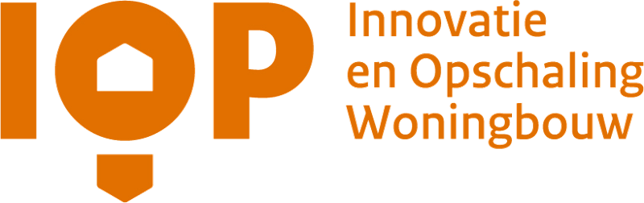

Samen versnellen
EKV Fast Lane is onderdeel van het programma Innovatie en Opschaling Woningbouw
Nederland staat voor een enorme woningbouwopgave. Tegelijkertijd is er krapte op de arbeidsmarkt, zijn vergunningprocedures complex en bereikt de infrastructuur haar grenzen. Door vernieuwend te plannen, ontwerpen, bouwen en samenwerken, kunnen we sneller, betaalbaarder en duurzamer woningen realiseren. Het programma Innovatie en Opschaling Woningbouw (IOP) draagt bij aan een fundamentele systeemverandering in de woningbouw en gebiedsontwikkeling.
Innovatie en Opschaling Woningbouw
Het IOP is een meerjarig programma waarin overheid, marktpartijen en kennisinstellingen samenwerken aan innovatie en opschaling van de woningbouw. Het programma brengt partijen samen, helpt belemmeringen weg te nemen en zorgt ervoor dat succesvolle innovaties sneller worden toegepast.
Het programma werkt langs vier lijnen: conceptueel en industrieel bouwen; data en digitalisering; innovatieve oplossingen; en maatschappelijke innovaties in gebiedsontwikkeling. In de Broedplaats testen vernieuwers, beleidsmakers, ontwikkelaars en bouwers oplossingen op praktijkvraagstukken. In de Samenwerkingsagenda Toekomstbestendige Gebiedsontwikkeling passen Rijk, gemeenten en marktpartijen innovaties toe in 23 gemeenten.

Doelen
Het ministerie van Volkshuisvesting en Ruimtelijke Ordening (VRO) brengt met het IOP beleid, uitvoering en regelgeving samen. Samen met brancheorganisaties, gemeenten, provincies, marktpartijen en kennisinstellingen zetten we ons in voor de volgende doelen:
Meer over het programma: volkshuisvestingnederland.nl.
Eén keer beoordelen, overal toepassen
Industrieel bouwen werkt alleen als het systeem eromheen meebeweegt. Een woning die in de fabriek in serie wordt gemaakt, is in elke gemeente dezelfde woning. Toch wordt zij nu in elke gemeente opnieuw bouwtechnisch getoetst, alsof het een nieuw ontwerp is.
Daar zet EKV Fast Lane op in. Met een erkende kwaliteitsverklaring (EKV) wordt een woningconcept één keer op bouwwerkniveau beoordeeld en gecertificeerd. Gemeenten hoeven die beoordeling niet over te doen en kunnen voor zulke projecten een vaste, voorspelbare route inrichten: de Fast Lane.
EKV Fast Lane is een van de twee versnellers binnen programmalijn 1, conceptueel en industrieel bouwen. De andere versneller gaat over industriële bouwstromen: zorgen dat fabrieken continu kunnen produceren. De twee horen bij elkaar. Zonder voorspelbare vergunningen geen vaste bouwstromen, en zonder bouwstromen geen reden om concepten te certificeren.
Wat EKV Fast Lane bijdraagt aan de doelen
Industrieel bouwen
Certificering maakt industriële concepten in elke gemeente toepasbaar zonder nieuwe toets, en geeft bouwers een reden om in serie te produceren.
Kortere doorlooptijd
De bouwtechnische toets verdwijnt uit het kritieke pad en afspraken tussen opdrachtgever, bouwer en gemeente worden naar voren gehaald.
Datagedreven werken
Een certificaat en een openbaar informatiedocument maken de prestaties van een concept vindbaar en vergelijkbaar, voor elke gemeente en opdrachtgever.
Wat we leren leggen we vast in een blauwdruk, een routekaart en een handboek, zodat elke gemeente de route zelf kan inrichten, zonder begeleiding. Dat is het doel: geen project van De Bouwcampus, maar een normale manier van werken.